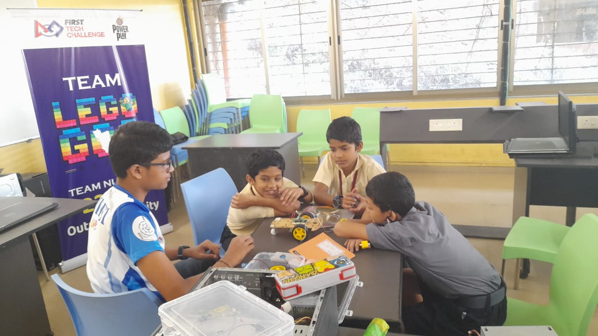

Exploring the Wonders: A journey through Basic Electronics and Robotics workshop in Mushtifund High School

On the vibrant days of December 21st and 22nd, 2022, the halls of Mushtifund High School resonated with the hum of curiosity and the buzz of innovation as a group of young minds delved into the realm of electronics and robotics. Spearheading this exhilarating exploration was a workshop titled 'Basic Electronics and Robotics', organized as a fundraising initiative and a gateway to outreach, marking a significant milestone as the first of its kind.
Conducted by Aniket and Samihan, enthusiasts from Team LegoGoa Axi0m, this workshop was not just about imparting knowledge but igniting a passion for innovation among the students. Guided by the supportive leadership of Headmistress Aparna Chari and Assistant Headmistress Beena Shankwarkar, the workshop found its footing in the well-equipped ATL lab, courtesy of the school's infrastructure.
The journey began with eight eager minds, each fueled by a thirst for knowledge and a desire to explore the world of electronics. With a nominal fee of Rs. 500 per student, the workshop aimed to make learning accessible while contributing to a noble cause. Special emphasis was placed on inclusivity, encouraging both boys and girls to participate, thus breaking down the barriers to entry in the field of robotics.
Over the course of two days, the workshop unfolded with a series of engaging sessions, covering the fundamentals of electronics and robotics. From the intricate workings of LEDs, breadboards, and buzzers to the practical application of sensors such as infrared and light-dependent resistors, the students embarked on a journey of discovery, guided by the expertise of their mentors.
Hands-on learning took center stage as the students delved into the assembly of four distinct robots: object followers, object avoiders, light followers, and light avoiders. Additionally, they undertook the challenge of building two practical projects—a touchless doorbell and an automatic hand sanitizer—a testament to their newfound knowledge and skills.
Beyond the technical aspects, the workshop fostered an environment of collaboration and problem-solving. Students were encouraged to embrace errors as opportunities for growth, learning valuable lessons in resilience and perseverance along the way.
The success of the workshop was not measured solely in terms of knowledge gained but in the bonds forged and the barriers broken. With the unwavering support of parents, mentors, and the school administration, the workshop raised a total of Rs. 4000, a testament to the collective commitment to education and empowerment.
As the curtains closed on this inaugural workshop, the echoes of laughter and the hum of excitement lingered in the air, serving as a testament to the transformative power of education and the boundless potential of young minds. For Aniket, Samihan, and all involved, this was not merely a workshop but a catalyst for change, paving the way for a future where innovation knows no bounds.

-Aniket Sushant Bhatikar
(as a LegoGoa Axi0m Teammate)
Date: 23 December 2022